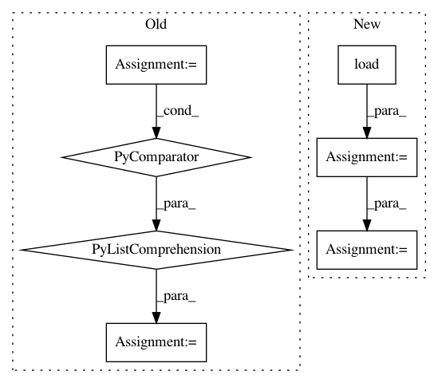

2bcb7d572ac8fdacceb56d5cbd5b05fad8c71e5e,tools/sort/sort.py,Sort,sort_blur,#Sort#,155
Before Change
filename_list, image_list = self._get_images()
logger.info("Estimating blur...")
blurs = [self.estimate_blur(img) for img in image_list]
logger.info("Sorting...")
matched_list = list(zip(filename_list, blurs))
img_list = sorted(matched_list, key=operator.itemgetter(1), reverse=True)
return img_list
def sort_face(self):
Sort by identity similarity
After Change
logger.info("Sorting by estimated image blur...")
// TODO We have metadata here, so we can mask the face for blur estimate
blurs = [(filename, self.estimate_blur(image))
for filename, image, _ in tqdm(self._loader.load(),
desc="Estimating blur",
total=self._loader.count,
leave=False)]
logger.info("Sorting...")
return sorted(blurs, key=lambda x: x[1], reverse=True)
def sort_face(self):
In pattern: SUPERPATTERN
Frequency: 3
Non-data size: 7
Instances
Project Name: deepfakes/faceswap
Commit Name: 2bcb7d572ac8fdacceb56d5cbd5b05fad8c71e5e
Time: 2021-03-23
Author: 36920800+torzdf@users.noreply.github.com
File Name: tools/sort/sort.py
Class Name: Sort
Method Name: sort_blur
Project Name: PPPLDeepLearning/plasma-python
Commit Name: a5734482304bc2b09b263d25525f405b51802952
Time: 2017-01-14
Author: asvyatkovskiy@gmail.com
File Name: plasma/conf_parser.py
Class Name:
Method Name: parameters
Project Name: richzhang/colorization-pytorch
Commit Name: 81942b345eb432b44ff3e4cda05fe71ce8ac7fde
Time: 2018-08-25
Author: rzhang88@gmail.com
File Name: test_sweep.py
Class Name:
Method Name: